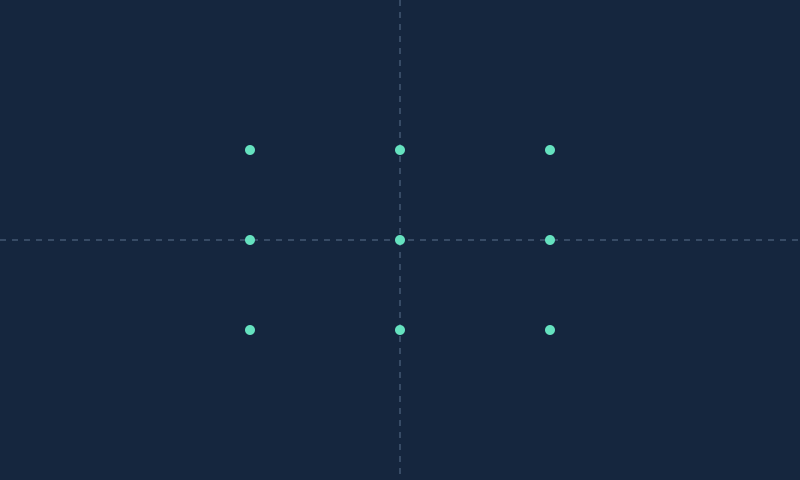

From 3D camera coordinates to 2D pixels · Synthetic learning fixture

X right · Y down · Z forward. Dashed lines mark principal point axes.
u = fx X/Z + cx · v = fy Y/Z + cy
| Point | Camera XYZ | Pixel UV | Status |
|---|---|---|---|
| 0 | [-1.0, -0.6, 3.0] | [250.0, 150.0] | in_frame |
| 1 | [0.0, -0.6, 3.0] | [400.0, 150.0] | in_frame |
| 2 | [1.0, -0.6, 3.0] | [550.0, 150.0] | in_frame |
| 3 | [-1.0, 0.0, 3.0] | [250.0, 240.0] | in_frame |
| 4 | [0.0, 0.0, 3.0] | [400.0, 240.0] | in_frame |
| 5 | [1.0, 0.0, 3.0] | [550.0, 240.0] | in_frame |
| 6 | [-1.0, 0.6, 3.0] | [250.0, 330.0] | in_frame |
| 7 | [0.0, 0.6, 3.0] | [400.0, 330.0] | in_frame |
| 8 | [1.0, 0.6, 3.0] | [550.0, 330.0] | in_frame |
| 9 | [8.0, 0.0, 2.0] | [2200.0, 240.0] | outside_frame |
| 10 | [0.0, 0.0, -1.0] | None | behind_or_near_plane |
| 11 | [0.0, 0.0, 0.0] | None | behind_or_near_plane |
HTML shows first 100 points; all records are exported.
JSON · CSVNo calibration, lens distortion, occlusion reasoning or robot control. In-frame projection does not establish visibility.